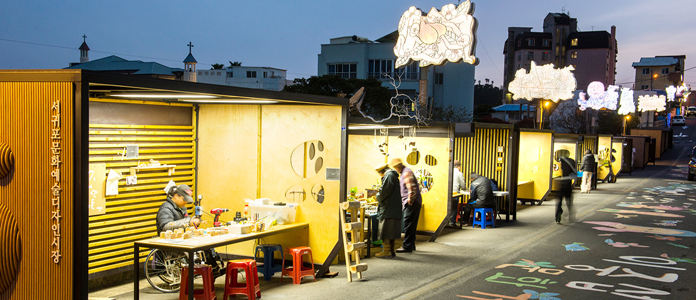

아일랜드 출신 임피제 신부가 1954년 제주에 오면서 목장 숙소로 짓 기 시작한 후 사료공장, 성당으로 활용됐습니다.
제주에서 점차 다른 지방으로 보급됐지만 현재 제주에만 건축물이 남
아있는데,
국내 근현대 건축사의 한 페이지를 보여주는 가치를 지닌다
고 전문가들은 평가합니다.
성이시돌목장은 제주특별자치도 제주시 한림읍 금악리에 있는 목장이다. 특히 이시돌목장은 제주 지역 최초의 전기업목장(全企業牧場)으로 1961년 11 월 말 제주시 한림읍 금악리에 세워 양돈 사업을 실시하였으며 면양을 사육 하였던 것으로 알려져 있다. 이시돌목장의 특색있는 건축양식으로 테쉬폰도 유명하다. (출처:향토문화전자대전)
주말 마다'서귀포문화예술디자인시장'이 열립니다.
'아트마켓'이라고도 부르는데,문화예술체험이나 공연관람을 할수도 있고
작가들이 직접 만든 창작 예술품 등일 판매하기도 합니다.